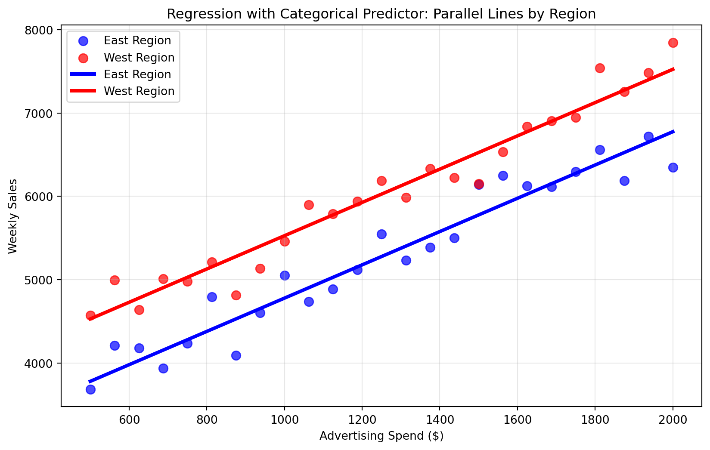

import pandas as pd
import matplotlib.pyplot as plt
# Example dataset: advertising spend vs. weekly sales
data = pd.DataFrame({
"ad_spend": [400, 500, 600, 700, 800, 900, 1000, 1100, 1200, 1300, 1400, 1500, 1600, 1700, 1800, 1900, 2000, 2100, 2200, 2300],
"weekly_sales": [4200, 4400, 4100, 4800, 5600, 5200, 4900, 5500, 5300, 5900, 5700, 6300, 6900, 6200, 5800, 6600, 7100, 6800, 7300, 7800]
})
# First look at the relationship visually
plt.scatter(data["ad_spend"], data["weekly_sales"])
plt.xlabel("Advertising Spend")
plt.ylabel("Weekly Sales")
plt.title("Ad Spend vs. Weekly Sales")
plt.show()21 Correlation and Linear Regression Foundations
In business, we rarely care about a single number in isolation. Instead, leaders ask questions like:
- Does increasing marketing spend actually increase sales?
- Are higher salaries associated with better employee retention?
- Do customers in certain regions spend more per transaction than others?
NoteExperiential Learning
Think about a situation where you suspected two things were related. Maybe you noticed that days with more advertising seemed to bring higher sales, or that studying longer before exams often resulted in better grades.
Write down one example from your work, studies, or daily life where you think two variables are connected. By the end of this chapter, you’ll have the tools to test whether your intuition is correct.
Answering these questions requires analyzing relationships between variables. This chapter introduces two fundamental tools for that: correlation (a descriptive statistic) and linear regression (a predictive model).
By the end of this chapter, you will be able to:
- Explain what correlation measures and interpret its values (positive, negative, weak, strong)
- Visualize and estimate the strength of relationships between variables
- Calculate and interpret simple correlation coefficients in Python
- Build and interpret simple linear regression models with one predictor
- Extend regression models to include multiple numeric and categorical predictors
- Connect regression coefficients to meaningful business insights
- Recognize the limitations of correlation and regression with respect to causality
Note📓 Follow Along in Colab!
As you read through this chapter, we encourage you to follow along using the companion notebook in Google Colab (or another editor of your choice). This interactive notebook lets you run all the code examples covered here—and experiment with your own ideas.
👉 Open the Correlation & Regression Notebook in Colab.
21.1 Correlation: Measuring the Strength of a Relationship
Correlation measures how strongly two variables move together in a straight-line (linear) relationship.
Let’s See This in Action
Imagine you are working for a regional grocery chain. The marketing director has been steadily increasing the advertising budget over the last couple years and wants to know if these additional dollars are truly paying off. Do higher ad spends actually translate into higher weekly sales? This is a common business scenario where correlation can help us quickly explore whether a relationship exists between two key variables.
But before you even compute the correlation you would probably visualize the relationship as below.
It appears from the scatterplot that there is some relationship between advertising spend and weekly sales. However, the natural next question is: how do we measure this relationship? Is there a way to quantify it? This is where correlation comes in. Correlation provides a single number to summarize the strength and direction of the association.
# Now compute the correlation to quantify the relationship
data.corr()| ad_spend | weekly_sales | |
|---|---|---|
| ad_spend | 1.000000 | 0.941372 |
| weekly_sales | 0.941372 | 1.000000 |
The correlation table shows us that advertising spend and weekly sales have a correlation of approximately 0.94, which indicates a strong positive linear relationship. This means that as advertising spending increases, weekly sales tend to increase as well. The diagonal values of 1.0 in the table above simply show that each variable is perfectly correlated with itself, which is always true.
What Does the Correlation Value Mean?
Correlation (often denoted \(\rho\) or \(r\) ) ranges from −1 to +1:
- +1: perfect positive linear relationship
- 0: no linear relationship
- −1: perfect negative linear relationship
To build intuition, let’s simulate five datasets and visualize what different correlation strengths look like: strong positive (~0.8), weak positive (~0.3), no linear relationship (~0), weak negative (~−0.3), and strong negative (~−0.8). The dotted diagonal line in each plot shows what perfect positive correlation would look like.
Show code for correlation visualization
import numpy as np
def simulate_pair(rho, n=250, seed=123):
rng = np.random.default_rng(seed + int((rho + 1) * 1000))
cov = np.array([[1.0, rho],[rho, 1.0]])
xy = rng.multivariate_normal([0, 0], cov, size=n)
df = pd.DataFrame({"x": xy[:,0], "y": xy[:,1]})
df["rho_sample"] = df["x"].corr(df["y"])
return df
rhos = [0.8, 0.3, 0.0, -0.3, -0.8]
dfs = [simulate_pair(r) for r in rhos]
fig, axes = plt.subplots(2, 3, figsize=(15, 8), constrained_layout=True)
axes = axes.flatten() # Convert 2D array to 1D for easier indexing
for i, (df, target_r) in enumerate(zip(dfs, rhos)):
ax = axes[i]
ax.scatter(df["x"], df["y"], alpha=0.7)
# Add diagonal line showing perfect correlation
xlim = ax.get_xlim()
ylim = ax.get_ylim()
line_range = [max(xlim[0], ylim[0]), min(xlim[1], ylim[1])]
ax.plot(line_range, line_range, 'k--', alpha=0.5, linewidth=1, label='Perfect correlation')
ax.set_title(f"Target ρ ≈ {target_r}\nSample ρ = {df['rho_sample'][0].round(2)}")
ax.set_xlabel("x")
ax.set_ylabel("y")
# Hide the empty subplot
axes[5].set_visible(False)
plt.show()
TipPractice Guessing Correlations
Sharpen your intuition at Guess the Correlation.
Correlation in Business: Association ≠Causation
Correlation is descriptive—it tells you variables move together, but not why. Treating correlation as causation can lead to costly mistakes. For example, ice cream sales and drowning deaths are positively correlated, but ice cream doesn’t cause drownings—both increase during hot summer weather. Similarly, finding that stores with more staff have higher sales doesn’t mean hiring more staff will automatically increase sales; successful stores might simply need more employees to handle existing demand. When making business decisions, always ask: could there be a third variable explaining both trends? Is the relationship truly causal, or just coincidental? Strong correlation is a starting point for investigation, not a conclusion for action.
Note🎥 Video Spotlight: Pearson’s Correlation – Clearly Explained!
In this video, StatQuest with Josh Starmer provides an excellent introduction to correlation—what it measures, how to interpret it, and why it’s such an important concept in data analysis. The video uses clear visuals and intuitive examples to show how two variables can move together in positive, negative, or no linear relationship.
As you watch, think about the following:
- How does the correlation coefficient quantify the strength and direction of a relationship?
- Why does correlation not necessarily imply causation?
- How might correlation analysis help you make better data-driven business decisions?
Knowledge Check
21.2 From Correlation to Regression
Correlation tells us two variables move together. Regression provides an equation to predict one variable from another. While correlation simply measures the strength of association, linear regression goes further by finding the “best-fitting line†through your data points and expressing this relationship as a mathematical equation. This equation allows you to make concrete predictions: given a specific value for your predictor variable (like advertising spend), you can estimate the expected value of your outcome variable (like weekly sales).
If you completed the visualization activity above, you probably imagined a line that looks something like this:
Show code for regression line visualization
# Create scatter plot with best-fit line
plt.figure(figsize=(10, 6))
plt.scatter(data["ad_spend"], data["weekly_sales"], alpha=0.7, color='blue', label='Data points')
# Calculate and plot the best-fit line
import numpy as np
from sklearn.linear_model import LinearRegression
# Fit a simple linear regression
X_simple = data["ad_spend"].values.reshape(-1, 1)
y_simple = data["weekly_sales"].values
reg = LinearRegression().fit(X_simple, y_simple)
# Create line points for plotting
line_x = np.linspace(data["ad_spend"].min(), data["ad_spend"].max(), 100)
line_y = reg.predict(line_x.reshape(-1, 1))
plt.plot(line_x, line_y, color='red', linewidth=2, label='Best-fit line')
plt.xlabel("Advertising Spend ($)")
plt.ylabel("Weekly Sales")
plt.title("Linear Relationship: Ad Spend vs Weekly Sales")
plt.legend()
plt.grid(True, alpha=0.3)
plt.show()This visualization captures the essence of linear regression: finding the “best-fit line†that best represents the directional relationship between two variables. While you can imagine many possible lines through these points, regression uses mathematical techniques to determine the single line that minimizes the overall distance between the line and all data points. This optimal line becomes our predictive model, allowing us to estimate weekly sales for any given advertising spend amount.
In this chapter, we’ll use scikit-learn’s LinearRegression for building our models. Scikit-learn focuses on prediction and provides clean, easy-to-interpret output that emphasizes the practical business insights we can gain from regression coefficients and predictions.
from sklearn.linear_model import LinearRegression
# Prepare the data
X = data[["ad_spend"]] # Feature matrix
y = data["weekly_sales"] # Target variable
# Fit the model
model = LinearRegression()
model.fit(X, y)LinearRegression()In a Jupyter environment, please rerun this cell to show the HTML representation or trust the notebook.
On GitHub, the HTML representation is unable to render, please try loading this page with nbviewer.org.
Parameters
| fit_intercept | True | |
| copy_X | True | |
| tol | 1e-06 | |
| n_jobs | None | |
| positive | False |
We use the .fit() method to train our regression model, where X represents our features (predictors) - the variables we use to make predictions - and y represents our target variable - the outcome we’re trying to predict.
Once our model is fitted, there are several outputs we can extract to understand our regression results. For now, we’ll focus on the two most important ones: the intercept and the coefficient. The intercept tells us the predicted value of our target variable when all predictors equal zero, while the coefficient tells us how much our target variable changes for each one-unit increase in our predictor variable.
# Extract key model components
intercept = model.intercept_
coefficient = model.coef_[0]
print(f"Intercept: {intercept:.2f}")
print(f"Ad Spend Coefficient: {coefficient:.2f}")Intercept: 3552.41
Ad Spend Coefficient: 1.6821.3 Interpreting the Regression Line
The regression model is simply an equation that represents the relationship between our variables. The general form of our equation is: \[ \text{Weekly Sales} = \text{Intercept} + \text{Slope} \times \text{Ad Spend} \]
As we fit our model, this equation gets updated to incorporate our specific intercept and coefficient values. Based on our model results above, our fitted equation becomes: \[ \text{Weekly Sales} = 3552 + 1.68 \times \text{Ad Spend} \]
Here’s how to interpret this model:
- Intercept (3552): When ad spend is $0, we expect weekly sales of $3,552
- Coefficient (1.68): For every $1 increase in ad spend, weekly sales increase by $1.68
This means advertising appears to have a positive effect on sales, and we can quantify exactly how much impact each advertising dollar has. If we were to visualize this equation, it would look like the following plot. We can think of this red line as our model’s “best guess†about the relationship between advertising spend and sales—it represents the equation we just derived. For example, if we wanted to predict the expected weekly sales when advertising spend is $1,500.
Show code for regression line visualization
# Visualize the fitted regression line
plt.figure(figsize=(10, 6))
plt.scatter(data["ad_spend"], data["weekly_sales"], alpha=0.7, label="Data points")
plt.plot(data["ad_spend"], model.predict(X), color="red", linewidth=2, label="Fitted line")
# Add prediction point for $1,500 ad spend
prediction_x = 1500
prediction_df = pd.DataFrame({"ad_spend": [prediction_x]})
prediction_y = model.predict(prediction_df)[0]
plt.scatter(prediction_x, prediction_y, color="orange", s=100, zorder=5, label=f"Prediction: ${prediction_x} → ${prediction_y:.0f}")
plt.xlabel("Advertising Spend ($)")
plt.ylabel("Weekly Sales")
plt.title("Simple Linear Regression: Ad Spend vs Weekly Sales")
plt.legend()
plt.grid(True, alpha=0.3)
plt.show()
Note🎥 Video Spotlight: Simple Linear Regression Explained
This video introduces the goals of regression, connects the model to the basic linear equation ( \(y = \beta_0 + \beta_1x\) ), and shows how to interpret the slope and intercept using a clear, real-world example.
Making Predictions with Our Model
One of the most powerful aspects of regression is that we can use our fitted model to make predictions for new scenarios. While we could manually calculate predictions using our equation (as shown below), scikit-learn provides a convenient .predict() method that does this calculation for us automatically.
\[ \$6072 = 3552 + 1.68 \times \$1500 \]
Instead of manually calculating, we can use our fitted model’s .predict() method. This method takes new input data (in the same format as our training data) and applies our learned equation to generate predictions. This approach is especially useful when making predictions for multiple scenarios or when working with more complex models.
# Make a prediction for $1,500 in advertising spend
new_ad_spend = pd.DataFrame({"ad_spend": [1500]}) # $1500 in advertising
predicted_sales = model.predict(new_ad_spend)
print(f"Prediction: If we spend $1,500 on advertising, we expect {predicted_sales[0]:.0f} in weekly sales")Prediction: If we spend $1,500 on advertising, we expect 6072 in weekly salesKnowledge Check
21.4 Multiple Linear Regression
While simple linear regression uses a single predictor variable to make predictions, multiple linear regression extends this approach by incorporating multiple predictor variables simultaneously. This is much more realistic for business scenarios, where outcomes are rarely influenced by just one factor. Instead of asking “How does advertising spend affect sales?†we can ask more nuanced questions like “How do advertising spend AND number of stores AND seasonal factors together affect sales?”
The power of multiple regression lies in its ability to isolate the effect of each predictor while holding all other predictors constant. This allows us to answer questions like: “If we increase advertising spend by $100 while keeping the number of stores the same, how much will sales increase?†This type of insight is invaluable for business decision-making because it helps managers understand the independent contribution of each factor they control.
Expanding Our Scenario: Let’s return to our grocery chain example, but now imagine the marketing director realizes that sales aren’t just influenced by advertising spend—the number of stores in their network also plays a crucial role. As the company has expanded over the past few years, they’ve opened new locations, and the director suspects that having more stores amplifies the effect of their advertising efforts. They want to understand both factors simultaneously: how does advertising spend affect sales, and how does the number of stores affect sales, when we account for both factors together?
data2 = pd.DataFrame({
"ad_spend": [400, 500, 600, 700, 800, 900, 1000, 1100, 1200, 1300, 1400, 1500, 1600, 1700, 1800, 1900, 2000, 2100, 2200, 2300],
"num_stores": [3, 3, 4, 4, 4, 5, 5, 5, 5, 6, 6, 6, 6, 7, 7, 7, 8, 8, 8, 9],
"weekly_sales": [4200, 4400, 4100, 4800, 5600, 5200, 4900, 5500, 5300, 5900, 5700, 6300, 6900, 6200, 5800, 6600, 7100, 6800, 7300, 7800]
})
data2.head()| ad_spend | num_stores | weekly_sales | |
|---|---|---|---|
| 0 | 400 | 3 | 4200 |
| 1 | 500 | 3 | 4400 |
| 2 | 600 | 4 | 4100 |
| 3 | 700 | 4 | 4800 |
| 4 | 800 | 4 | 5600 |
To model this scenario, we follow the same process as simple linear regression, but now we include multiple predictors in our feature matrix. All we’re really doing is expanding our simple equation to accommodate additional variables. Instead of predicting weekly sales using only advertising spend, we now predict it using both advertising spend AND number of stores:
\[ \text{Weekly Sales} = \text{Intercept} + \beta_1 \times \text{Ad Spend} + \beta_2 \times \text{Num Stores} \]
This equation allows us to understand how each factor independently contributes to sales while accounting for the presence of the other factors.
# Prepare the data for multiple regression
X2 = data2[["ad_spend", "num_stores"]] # Multiple features
y2 = data2["weekly_sales"]
# Fit the multiple regression model
model2 = LinearRegression()
model2.fit(X2, y2)LinearRegression()In a Jupyter environment, please rerun this cell to show the HTML representation or trust the notebook.
On GitHub, the HTML representation is unable to render, please try loading this page with nbviewer.org.
Parameters
| fit_intercept | True | |
| copy_X | True | |
| tol | 1e-06 | |
| n_jobs | None | |
| positive | False |
Once our multiple regression model is fitted, we can examine the three key parameters of interest for our equation: the intercept and the two coefficients (one for each predictor variable). These parameters define our specific predictive equation and tell us how each factor influences weekly sales.
# Extract key model components
intercept = model2.intercept_
ad_spend_coef = model2.coef_[0]
num_stores_coef = model2.coef_[1]
print(f"Intercept: {intercept:.2f}")
print(f"Ad Spend Coefficient: {ad_spend_coef:.2f}")
print(f"Num Stores Coefficient: {num_stores_coef:.2f}")Intercept: 3843.58
Ad Spend Coefficient: 2.12
Num Stores Coefficient: -153.07Based on our model results, our fitted multiple regression equation becomes: \[ \text{Weekly Sales} = 3843.58 + 2.12 \times \text{Ad Spend} + (-153.07) \times \text{Num Stores} \]
Here’s how to interpret each parameter:
- Intercept (3843.58): When both ad spend and number of stores are 0, we expect weekly sales of $3,844
- Ad Spend coefficient (2.12): For every $1 increase in ad spend, weekly sales increase by $2.12, holding number of stores constant
- Num Stores coefficient (-153.07): For each additional store, weekly sales decrease by $153, holding ad spend constant
Interestingly, the negative coefficient for number of stores suggests that having more stores actually decreases weekly sales when advertising spend is held constant. This could indicate that sales are being spread across more locations, or that newer stores are still building their customer base.
With two predictor variables, this equation now becomes a 3-dimensional problem where our “best-fit line†becomes a “best-fit plane.†Just as we could follow a line to make predictions with simple regression, we can still make predictions by following this plane in 3D space. However, as we add more predictors (creating 4, 5, or even hundreds of dimensions), visualization becomes impossible, though the mathematical principles remain the same.
Show code for 3D visualization of multiple regression plane
import matplotlib.pyplot as plt
import numpy as np
import warnings
from mpl_toolkits.mplot3d import Axes3D
# Suppress matplotlib 3D plotting warnings
warnings.filterwarnings('ignore', category=RuntimeWarning, module='mpl_toolkits.mplot3d')
# Create 3D plot
fig = plt.figure(figsize=(12, 8))
ax = fig.add_subplot(111, projection='3d')
# Plot the actual data points
ax.scatter(data2["ad_spend"], data2["num_stores"], data2["weekly_sales"],
color='blue', s=50, alpha=0.7, label='Data points')
# Create meshgrid for the prediction plane
ad_range = np.linspace(data2["ad_spend"].min(), data2["ad_spend"].max(), 20)
stores_range = np.linspace(data2["num_stores"].min(), data2["num_stores"].max(), 20)
ad_mesh, stores_mesh = np.meshgrid(ad_range, stores_range)
# Calculate predictions for the plane
plane_predictions = (model2.intercept_ +
model2.coef_[0] * ad_mesh +
model2.coef_[1] * stores_mesh)
# Plot the prediction plane
ax.plot_surface(ad_mesh, stores_mesh, plane_predictions, alpha=0.3, color='red')
# Set labels and title
ax.set_xlabel('Advertising Spend ($)')
ax.set_ylabel('Number of Stores')
ax.set_zlabel('Weekly Sales')
ax.set_title('Multiple Linear Regression: 3D Visualization\nBest-Fit Plane Through Data Points')
ax.legend()
plt.tight_layout()
plt.show()Making Predictions with Multiple Regression
Just as with simple linear regression, we can use our fitted multiple regression model to make predictions for new scenarios. The key advantage of multiple regression is that we can predict outcomes based on multiple input variables simultaneously, allowing us to explore different business scenarios and understand how changes in multiple factors affect our outcome of interest.
# Make predictions with multiple features
print("Multiple Regression Predictions:")
print("Scenario 1: $1500 ad spend, 5 stores")
scenario1 = pd.DataFrame({"ad_spend": [1500], "num_stores": [5]})
pred1 = model2.predict(scenario1)
print(f"Predicted sales: {pred1[0]:.0f}")
print("\nScenario 2: $1500 ad spend, 7 stores")
scenario2 = pd.DataFrame({"ad_spend": [1500], "num_stores": [7]})
pred2 = model2.predict(scenario2)
print(f"Predicted sales: {pred2[0]:.0f}")
print(f"\nEffect of 2 additional stores: {pred2[0] - pred1[0]:.0f} change in weekly sales")Multiple Regression Predictions:
Scenario 1: $1500 ad spend, 5 stores
Predicted sales: 6261
Scenario 2: $1500 ad spend, 7 stores
Predicted sales: 5955
Effect of 2 additional stores: -306 change in weekly salesKnowledge Check
21.5 Categorical Predictors
So far, we’ve worked with continuous numeric predictors like advertising spend (measured in dollars) and number of stores (measured in counts). However, many important business factors are categorical rather than numeric—like customer type (Premium vs. Standard), sales region (North vs. South), product category (Electronics vs. Clothing), or marketing channel (Email vs. Social Media). These categorical variables can be just as important for predicting outcomes, but they require special handling because regression models fundamentally work with numbers, not categories.
The solution is dummy encoding (also called one-hot encoding), which converts categorical variables into numeric 0/1 indicators. While this might seem like a technical detail, it’s actually a powerful tool that allows us to quantify the impact of categorical factors on our outcomes. For instance, we can determine exactly how much more (or less) customers in the West region spend compared to those in the East, or how much premium customers differ from standard customers in their purchasing behavior.
Understanding Dummy Encoding
Suppose we have a variable region with two categories: East and West. Regression models require numeric inputs, so we need to transform this categorical variable into numbers.
- Create a new variable
region_West:- If a row is West →
region_West = 1 - If a row is East →
region_West = 0
- If a row is West →
The East category becomes the baseline (reference group), and the coefficient for region_West tells us how much the West differs from East, holding other variables constant.
Here’s how dummy encoding changes the data:
| ad_spend | region | weekly_sales | region_West |
|---|---|---|---|
| 1000 | East | 5000 | 0 |
| 1200 | West | 5200 | 1 |
| 1500 | East | 6000 | 0 |
Example: Region and Sales
Let’s see this in action by creating a new simulated dataset that includes both advertising spend and regional information. For this example, we’ll generate 50 data points (25 for each region) where West region stores have consistently higher baseline sales than East region stores, but both regions respond to advertising in the same way.
Show code for simulating categorical predictor data
import numpy as np
# Create 50 data points - 25 for each region
np.random.seed(123) # For reproducible results
# East region: lower baseline sales
east_ad_spend = np.linspace(500, 2000, 25)
east_base_sales = 3000 + 1.8 * east_ad_spend # Same slope as West
east_noise = np.random.normal(0, 200, 25)
east_sales = east_base_sales + east_noise
# West region: higher baseline sales (about $800 higher)
west_ad_spend = np.linspace(500, 2000, 25)
west_base_sales = 3800 + 1.8 * west_ad_spend # Same slope, higher baseline
west_noise = np.random.normal(0, 200, 25)
west_sales = west_base_sales + west_noise
# Combine into single DataFrame
data3 = pd.DataFrame({
"ad_spend": np.concatenate([east_ad_spend, west_ad_spend]),
"region": ["East"] * 25 + ["West"] * 25,
"weekly_sales": np.concatenate([east_sales, west_sales])
})
print("Simulated data with regional baseline differences:")
print(f"East region samples: {len(data3[data3['region'] == 'East'])}")
print(f"West region samples: {len(data3[data3['region'] == 'West'])}")
data3.head()Simulated data with regional baseline differences:
East region samples: 25
West region samples: 25| ad_spend | region | weekly_sales | |
|---|---|---|---|
| 0 | 500.0 | East | 3682.873879 |
| 1 | 562.5 | East | 4211.969089 |
| 2 | 625.0 | East | 4181.595700 |
| 3 | 687.5 | East | 3936.241057 |
| 4 | 750.0 | East | 4234.279950 |
In practice, we can use pandas’ pd.get_dummies() function to automatically perform this dummy encoding for us. This function takes categorical variables and creates new columns with 0/1 indicators for each category. The resulting dummy encoded variable (region_West) will appear as boolean values (True/False), but keep in mind that boolean values are mathematically equivalent to 1s and 0s, which is exactly what our regression model needs.
# Create dummy variables using pandas
X3_encoded = pd.get_dummies(data3[["ad_spend", "region"]], drop_first=True)
print("Dummy encoded data:")
X3_encoded.head()Dummy encoded data:| ad_spend | region_West | |
|---|---|---|
| 0 | 500.0 | False |
| 1 | 562.5 | False |
| 2 | 625.0 | False |
| 3 | 687.5 | False |
| 4 | 750.0 | False |
Now that we have our categorical variable properly encoded as numeric indicators, we can fit our regression model using the exact same process we’ve used before. The beauty of dummy encoding is that once the categorical variables are converted to numeric form, the regression algorithm treats them just like any other predictor variable.
y3 = data3["weekly_sales"]
# Fit the model with categorical predictor
model3 = LinearRegression()
model3.fit(X3_encoded, y3)
# Extract key model components
intercept = model3.intercept_
ad_spend_coef = model3.coef_[0]
region_west_coef = model3.coef_[1]
print(f"Intercept: {intercept:.2f}")
print(f"Ad Spend Coefficient: {ad_spend_coef:.2f}")
print(f"Region West Coefficient: {region_west_coef:.2f}")Intercept: 2781.30
Ad Spend Coefficient: 2.00
Region West Coefficient: 749.27Based on our model results, region_West is coded as 1 if the store is in the West, 0 otherwise. The positive coefficient tells us that, holding advertising spend constant, West region stores average about 749 more in weekly sales compared to East region stores. This suggests that the West region may have more favorable market conditions or customer demographics that lead to higher baseline sales performance.
Interpreting in Equation Form
The regression equation with a categorical predictor takes the form:
\[ \text{Weekly Sales} = \text{Intercept} + \beta_1 \times \text{Ad Spend} + \beta_2 \times \text{Region\_West} \]
Where:
- Intercept: Expected sales for East region (baseline) when ad spend = 0
- Ad Spend coefficient (β₁): Sales change per $1 ad spend increase (same for both regions)
- Region_West coefficient (β₂): Sales difference between West and East regions
If we substitute our model results into the equation, we get:
\[ \text{Weekly Sales} = 3040.48 + 1.80 \times \text{Ad Spend} + 749.01 \times \text{Region\_West} \]
This creates parallel lines with the same slope but different intercepts—showing that advertising has the same effect in both regions, but the West region has consistently higher baseline sales.
We can visualize this model to see how the categorical predictor creates two parallel prediction lines—one for each region. The lines have the same slope (representing the consistent effect of advertising spend) but different intercepts (representing the regional baseline difference).
Show code for categorical predictor visualization
# Create visualization of categorical predictor model
plt.figure(figsize=(10, 6))
# Separate data by region for plotting
east_data = data3[data3["region"] == "East"]
west_data = data3[data3["region"] == "West"]
# Plot data points
plt.scatter(east_data["ad_spend"], east_data["weekly_sales"],
color='blue', alpha=0.7, label='East Region', s=60)
plt.scatter(west_data["ad_spend"], west_data["weekly_sales"],
color='red', alpha=0.7, label='West Region', s=60)
# Create parallel prediction lines
ad_range = np.linspace(data3["ad_spend"].min(), data3["ad_spend"].max(), 100)
# East region line (region_West = 0)
# Formula: intercept + ad_spend_coef * ad_spend + region_coef * 0
east_predictions = model3.intercept_ + model3.coef_[0] * ad_range
plt.plot(ad_range, east_predictions, color='blue', linewidth=3, linestyle='-',
label=f'East Region')
# West region line (region_West = 1)
# Formula: intercept + ad_spend_coef * ad_spend + region_coef * 1
west_predictions = model3.intercept_ + model3.coef_[0] * ad_range + model3.coef_[1] * 1
plt.plot(ad_range, west_predictions, color='red', linewidth=3, linestyle='-',
label=f'West Region')
plt.xlabel('Advertising Spend ($)')
plt.ylabel('Weekly Sales')
plt.title('Regression with Categorical Predictor: Parallel Lines by Region')
plt.legend()
plt.grid(True, alpha=0.3)
plt.show()
As before, we can make predictions with our model on new data. Let’s see how our categorical predictor model works by predicting sales for stores in both regions with the same advertising spend.
# Demonstrate predictions for both regions using DataFrame format
print("Categorical Predictor Predictions:")
print("\nEast region store with $1500 ad spend:")
east_scenario = pd.DataFrame({
"ad_spend": [1500],
"region_West": [0]
})
east_pred = model3.predict(east_scenario)
print(f"Predicted sales: {east_pred[0]:.0f}")
print("\nWest region store with $1500 ad spend:")
west_scenario = pd.DataFrame({
"ad_spend": [1500],
"region_West": [1]
})
west_pred = model3.predict(west_scenario)
print(f"Predicted sales: {west_pred[0]:.0f}")
print(f"\nRegional difference: {west_pred[0] - east_pred[0]:.0f}")
print("(This equals the Region_West coefficient)")Categorical Predictor Predictions:
East region store with $1500 ad spend:
Predicted sales: 5777
West region store with $1500 ad spend:
Predicted sales: 6527
Regional difference: 749
(This equals the Region_West coefficient)Knowledge Check
21.6 Assumptions of Linear Regression
Linear regression is a powerful and widely used technique, but it relies on certain assumptions. Understanding these assumptions is important because when they are violated, your model’s predictions and interpretations may become unreliable. Here’s what each assumption means and why it matters in a business context:
Linearity: The relationship between predictors and the outcome is assumed to be linear. If the true relationship is curved or more complex, a linear model will oversimplify and potentially mislead decisions. Example: Assuming sales increase linearly with ad spend might overlook diminishing returns at higher spending levels.
Independence of errors: The residuals (errors) should not be correlated with each other. When errors are dependent, the model can give a false sense of confidence. Example: In time-series sales data, yesterday’s error often relates to today’s error—ignoring this can lead to poor forecasts.
Constant variance (homoscedasticity): The spread of residuals should be roughly the same across all levels of the predictor(s). If variance grows with the predictor, your model’s predictions will be more uncertain for certain groups. Example: Predicting customer spend may be reliable for average-income customers but wildly variable for high-income ones.
Normality of errors: Residuals should follow a roughly normal distribution. This assumption matters most for statistical inference (like confidence intervals and hypothesis tests). Example: If errors are highly skewed, a business might underestimate the risk of extreme losses.
While these assumptions provide a useful framework, real-world data often violates them. That doesn’t mean regression is useless—it simply means you need to interpret results cautiously and sometimes transform your data, add interaction terms, or explore alternative methods.
Importantly, later in this course you will learn about algorithms (such as decision trees, random forests, and boosting methods) that do not rely on these strict assumptions. These approaches can model nonlinear patterns, handle complex interactions, and provide more flexibility when linear regression falls short.
21.7 Summary
This chapter introduced you to two fundamental techniques that bridge exploratory data analysis and predictive modeling: correlation and linear regression. You’ve moved beyond describing individual variables to understanding how variables relate to and influence each other.
Correlation serves as a powerful descriptive tool for measuring the strength and direction of linear relationships. You learned that correlation coefficients range from -1 to +1, quickly revealing patterns in your data, while remembering that correlation describes association but never implies causation.
Linear regression extends correlation by providing a mathematical framework for prediction and interpretation. You mastered the progression from simple regression (one predictor) to multiple regression (several predictors) to categorical predictors (using dummy encoding). Key skills you developed include:
- Fitting models with scikit-learn’s
LinearRegressionusing.fit()and.predict()methods - Extracting and interpreting intercepts and coefficients in business terms
- Converting categorical variables with
pd.get_dummies()for use in regression models - Creating effective visualizations that communicate regression results
- Making predictions for new scenarios and business planning
Throughout realistic business scenarios involving advertising effectiveness and regional sales differences, you learned to translate statistical outputs into actionable business insights and maintain healthy skepticism about causal claims.
Looking ahead: The regression foundations you’ve built here are essential for all machine learning techniques you’ll encounter. In the next chapter, you’ll learn how to measure how well your models are performing through various evaluation metrics—a critical skill for determining when your models are ready for real-world deployment. The concepts of feature-target relationships, model fitting, and prediction interpretation you’ve mastered will transfer directly to any modeling framework in your data science career.
21.8 End of Chapter Exercise
For these exercises, you’ll work with three different datasets from the ISLP package. Each scenario mirrors a real-world decision context where regression can guide insights.